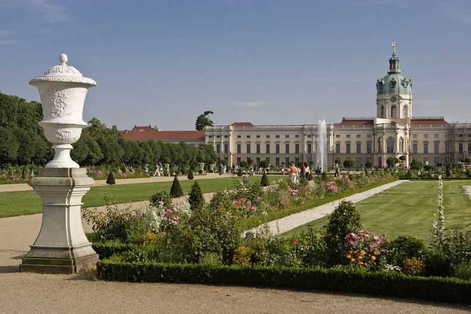
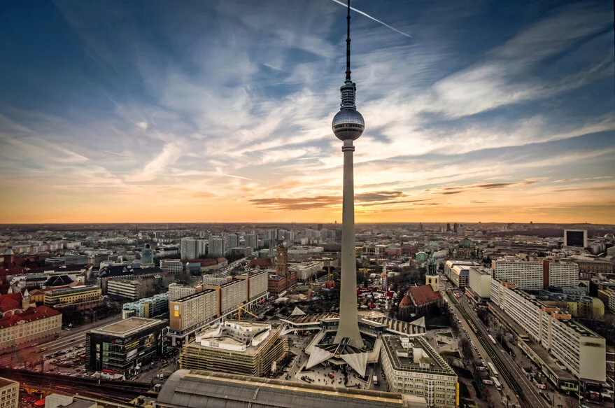
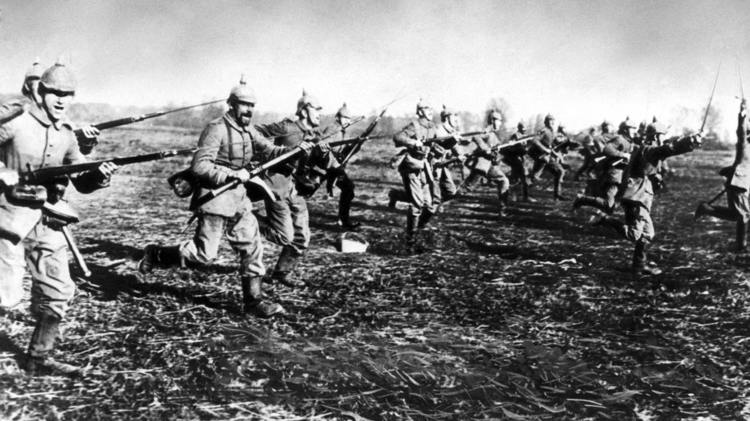
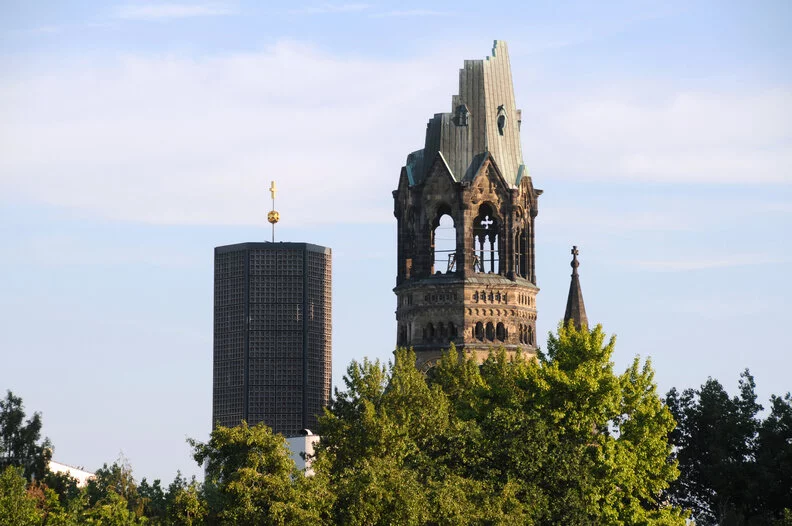
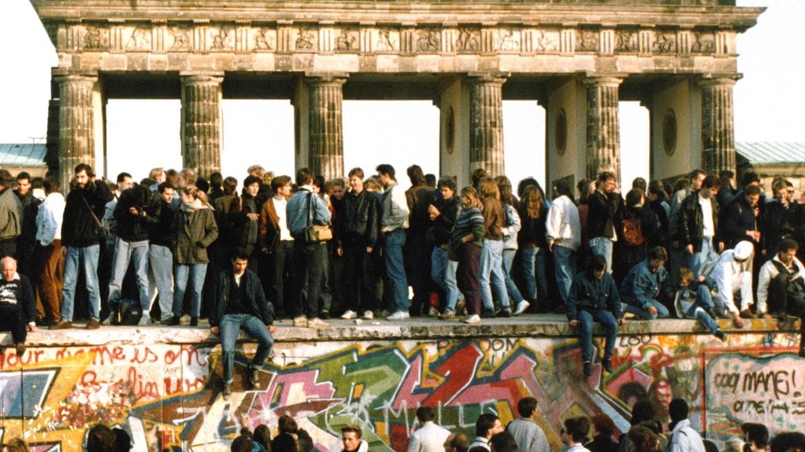

775 Jahre Berlin – das ist die Geschichte der Stadt voller Höhen und Tiefen. Abgesehen von gravierenden
Rückschlägen wie der Zeit des Nationalsozialismus entwickelte sich Berlin seit seiner Gründung
kontinuierlich zu der Stadt der Vielfalt, die heute weltweit respektiert und geschätzt wird.
Königin Luise (1810)

Auf dem Bild ist das Schloss Charlottenburg zu sehen.
Luise von Mecklenburg-Strelitz erlangte bereits zu Lebzeiten Kultstatus. Als Königin Luise nahm sie die
Menschen durch ihre Schönheit und ihr unkonventionelles Wesen für sich ein. Über ihre Hofdame Frau von
Berg, die einen berühmten literarischen Salon in Berlin Tiergarten unterhielt, erhielt sie direkten
Zugang zu zeitgenössischer Literatur von u. a. Goethe, Herder, Jean Paul. In Tilsit stellte sich Königin
Luise nach der Niederlage Preußens gegen Napoleon, erhobenen Hauptes dem Sieger entgegen und erbat von
dem Franzosen maßvolle Friedensbedingungen. Die Grabstätte der 1810 mit nur vierunddreißig Jahren
verstorbenen, zehnfachen Mutter im Schlosspark Charlottenburg ist bis heute die „Wallfahrtstätte“ der
zahlreichen Luise-Fans geblieben.
Industrielle Revolution (1847-1864)
Die zahlreichen Produktionsfeuer sowie die großen Rauchmengen aus den Schornsteinen der sich dort
ansiedelnden Eisengießereien und Maschinenbau Fabriken brachten Teilen der Oranienburger Vorstadt im 19.
Jahrhundert den Namen Feuerland ein. August Borsig baute hier die erste eigenständig in Deutschland
entwickelte Lokomotive und in der Schlegelstraße startete Emil Rathenau, Gründer der AEG, mit Edisons
Glühbirnen den Siegeszug des elektrischen Lichts in Berlin. Heute weltweit bekannte Unternehmen wie
Siemens (1847), Schering (1864) und Schwartzkopff (1852) entstanden und zogen immer mehr Arbeitskräfte
vom Land in die Stadt. Berlins Einwohnerzahl inkl. angrenzender Siedlungsgebiete wuchs auf 400.000
Menschen.
Kaiserliche Reichshauptstadt (1871)

Auf dem Bild ist der Fernsehturm zu sehen.
Nach Eingemeindung der Vorstädte Wedding, Gesundbrunnen und Moabit sowie Anteilen der Feldmarken
Charlottenburg, Schöneberg, Tempelhof und Rixdorf lebten zu Beginn der Deutschen Kaiserreichs 1871 fast
1 Million Menschen in Berlin und seinen Vororten. Es entstanden für Berlin typische „Mietskasernen“ wie
die Viktoriastadt sowie die repräsentative Gründerzeit-Villenkolonie in Lichterfeld-West. Nach dem
gewonnenen Deutsch-Französischen Krieg 1870/71 legt Reichskanzler Otto von Bismarck anfänglich einen
liberalen Kurs gegenüber linken Gruppierungen wie der Sozialistischen Arbeiterpartei August Bebels und
Wilhelm Liebknechts an. Um sie ab 1878 mit dem „Gesetz gegen die gemeingefährlichen Bestrebungen der
Sozialdemokratie“ zu bekämpfen. 1890 ging die SADP als stärkste Partei aus den ersten Reichstagswahlen
unter Kaiser Wilhelm III. hervor und Bismarck wurde aus dem Amt entlassen. 1906 nutzte der Schuster
Wilhelm Voigt die Uniformhörigkeit im Preußischen Staat aus – er lenkte als Hauptmann verkleidet echte
Soldaten in das Köpenicker Rathaus, wo er die Stadtkasse und Aufenthaltspapiere für sich raubte. 1907
öffnet am Wittenbergplatz das KaDeWe Kaufhaus des Westens mit gehobenem Sortiment und Luxuswaren sein
Geschäft.
Erster Weltkrieg und Revolution (1918)

Auf dem Bild ist der erste Weltkrieg zu sehen.
Erster Weltkrieg und Revolution
Der sich auf Grund von Bündnisverpflichtungen flächenbrandartig ausbreitende Erste Weltkrieg brachte
weltweit 17 Millionen Menschen den Tod – die Kriegsschulden dafür konnte Deutschland erst 2010 endgültig
begleichen. Da sich der Waffengang unerwartet in die Länge zog, musste Deutschland sein bisher liberales
Wirtschaftssystem komplett auf Kriegsplanwirtschaft umstellen. In Berlin kam es durch die damit
verbundene sinkende Produktivität der Landwirtschaft ab 1915 zu stärker werdenden Versorgungsengpässen
bei Grundnahrungsmitteln. Kriegsmüdigkeit, das Auseinderbrechen der bestehenden Familien- und
Gesellschaftsstrukturen, Armut und Hunger ließen den Unwillen der Bevölkerung anwachsen.
Unter dem Motto „Frieden und Brot“ beteiligten sich im Frühjahr 1918 in Berlin über 400.000 Menschen an
Demonstrationen des Spartakusbundes gegen Krieg. Ihr Protest fand seinen Höhepunkt in der Revolution von
1918, bei der Philipp Scheidemann (SPD) am 9. November vom Balkon des Reichstags die Republik ausrief.
Aufstieg der NSDAP (1928)
Dolchstoßlegende, Kriegsschuldfrage, Weltwirtschafts Krise, Armut, Hunger und Perspektivlosigkeit
machten die Menschen empfänglich für die Propaganda der NSDAP,
die seit 1920 an der Eliminierung der Republik arbeitete. Nachdem Hitlers Redeverbot auch in Preußen
aufgehoben wurde, sprach er 1928 erstmals öffentlich im Berliner Sportpalast.
Die sich zum Ende der 20er Jahre häufenden Saal- und Straßenschlachten zwischen der
nationalsozialistischen Sturmabteilung und dem kommunistischen Roten Frontkämpferbund (RFB)
gipfelten im Berliner „Blutmai“ von 1929 mit 30 Toten, 200 Verletzten und 1.200 Inhaftierungen. Die
Wahlen zur Stadtverordnetenversammlung am 17. November 1929 brachten der NSDAP 5,8 Prozent der Stimmen
und damit 13 Mandate im Stadtparlament ein. 1932 gewann die NSDAP die Reichstagswahlen sowohl im Juli
(37,4 Prozent) als auch im November (33,1 Prozent/Berlin: 25,9 Prozent) – woraufhin Hitler die von ihm
beanspruchte Reichskanzlerschaft am 30. Januar 1933 vom Reichspräsidenten Hindenburg übertragen bekam.
Das Kriegsende in Berlin (1945)

Auf dem Bild ist eine Turmrruine zu sehen.
Berlin, 8. Mai 1945, Tag der Befreiung. Die Stadt liegt in Trümmern. Ein Drittel aller Wohnungen und
Straßen sind zerstört. Der Krieg ist vorbei, doch er hat Spuren hinterlassen.
Unübersehbar sind die Kriegsspuren an den Statuen des Gropius-Baus, am Gebäude der Stiftung Neue
Synagoge Berlin – und auch am Turm der Kaiser-Wilhelm-Gedächtniskirche, dem wohl markantesten Mahnmal
Berlins. Der von Bomben zerstörte Kirchturm wurde nach öffentlicher Debatte als Ruine erhalten und durch
einen Neubau des Architekten Egon Eiermann ergänzt.
Hier sehen Sie auch die Madonna von Stalingrad. Die Kohlezeichnung des Lazarett-Arztes Kurt Reuber
gelangte während der Schlacht um Stalingrad mit einem letzten Transportflugzeug aus dem Kessel. 1983
übergaben die Angehörigen das Bild der Gedächtniskirche zum Gedenken an die Opfer. Ein weiteres in der
Kirche ausgestelltes Kunst-Objekt, das zum Frieden mahnt, ist das Coventrykreuz.
Fall der Mauer (1989)

Auf dem Bild ist der Mauerfall in Berlin zu sehen.
Schon vor der Feier des 40. Jahrestags ihrer Staatsgründung war die DDR-Führung durch eine wachsende
Bürgerbewegung, die einen Wandel analog zu „Perestroika“ und „Glasnost“ in der UDSSR einforderte,
destabilisiert worden. In seiner Festrede am 07. Oktober 1989 mahnte der Generalsekretär der
Kommunistischen Partei der Sowjetunion Michael Gorbatschow Reformen bei den Machthabern in Ost-Berlin
an. Massendemonstrationen, die Gründung des „Neuen Forums“ und Erich Honeckers Rücktritt zugunsten Egon
Krenz waren die Folge. Nach der Erklärung der Reisefreiheit für DDR-Bürger am 9. November überstürzten
sich die Ereignisse. Die Medien verbreiteten, dass die Mauer gefallen sei, Grenzsoldaten öffneten den
Grenzübergang an der Bornholmer Straße und die Menschen in Ost- und West-Berlin feierten diese Nacht als
das Ende der innerdeutschen Grenzziehung.